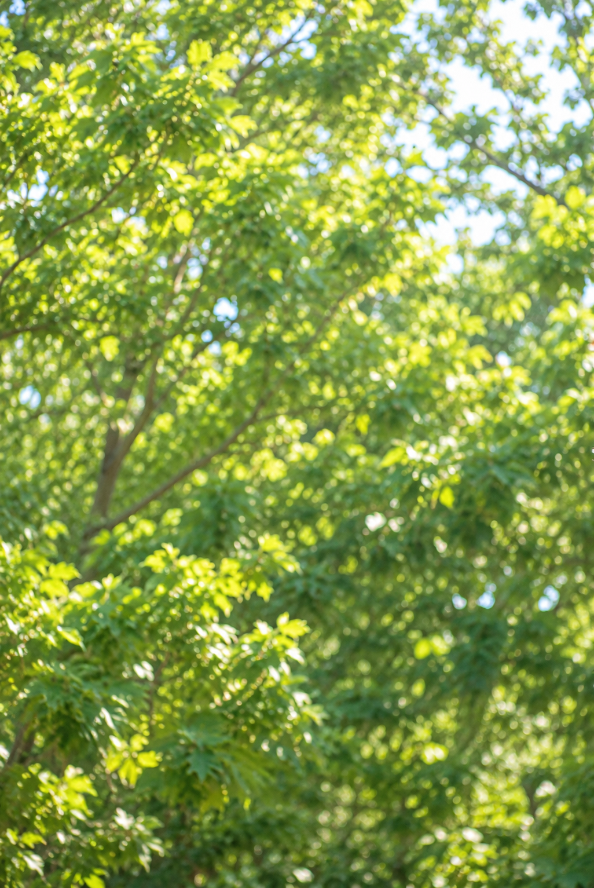
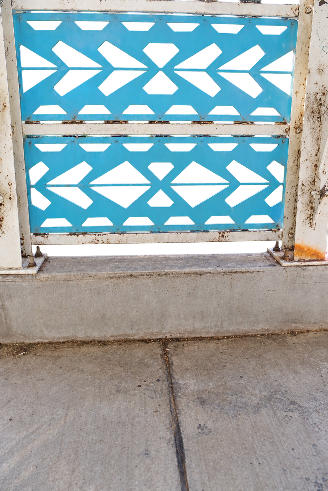
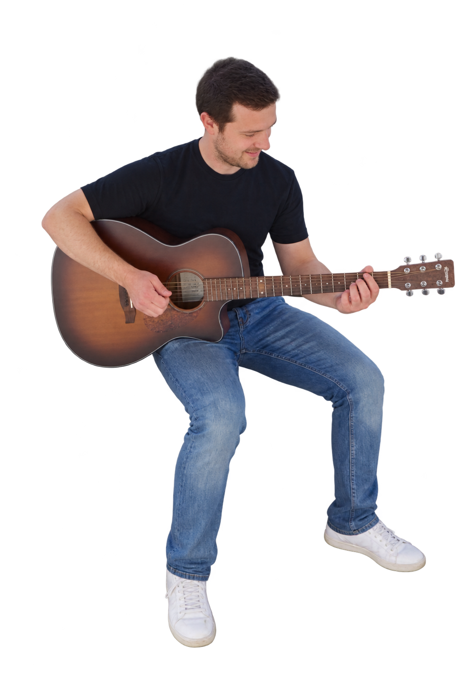

IMGP0627 · Parallax draft



A gentle float runs continuously. Move your pointer over the photo to add more depth. Reduced motion preferences are respected.
AI-edited draft: hidden scenery and subject details have been reconstructed. View clean background plate.